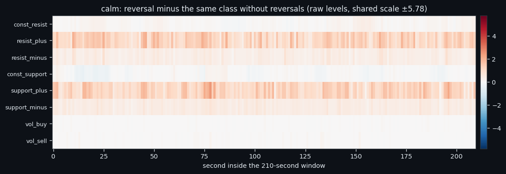
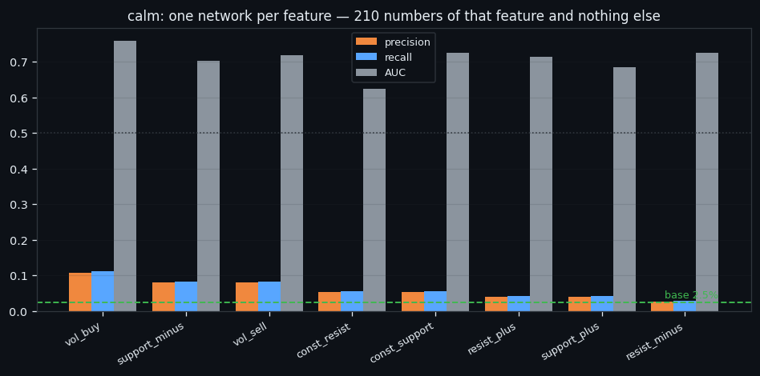
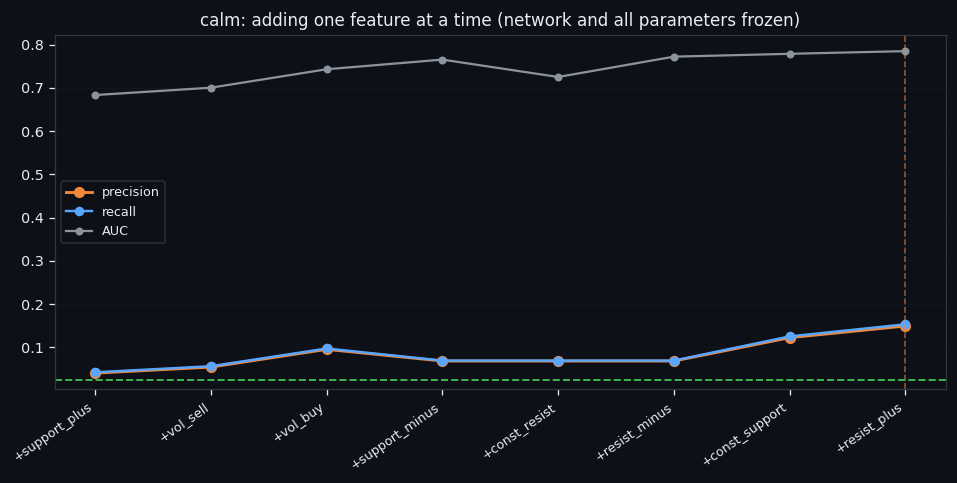
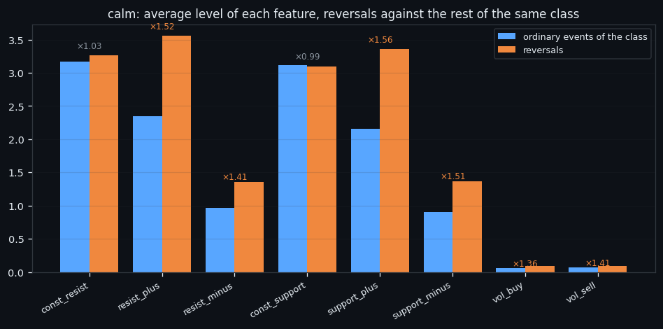

Reversals in a Quiet Market: Where 2.5% of Events Hide
In shortThe calm state fires on 29,303 windows of this dataset, and 739 of them (2.5%) sit on a turning point of price. This page asks one question and answers it with one frozen network: can a reversal be told apart from the ordinary events of its own class, and which of the eight order-book features carries that difference? Best single feature: vol_buy at 10.8% precision. Best set: 8 features at 14.9% precision and 15.3% recall, against a base rate of 2.5% — ×6.0.
Narrated walkthrough · plays from YouTube when you press play.
① What a reversal looks like inside the calm class
The point of all of this is not a leaderboard. A trading bot needs one thing from research: a moment when the book says something is about to change with enough purity that a position taken on it survives the 0.30% round-trip fee. Everything below is an attempt to isolate that moment inside one market state at a time.
Every window in this study is the same object: 210 seconds × 8 order-book features, one number per feature per second, and nothing else — no price, no time of day, no neighbouring windows. The label comes from an earlier study on this dataset: signals of a class merge into a group while the gap between them is under 10 minutes, and a group counts as a reversal if it touches a ZigZag pivot on the 2.3% grid within ±15 minutes. The label belongs to the group and is inherited by its windows.
Inside the calm class that gives 29,303 windows, of which 739 are reversal windows — a base rate of 2.5%. Everything on this page is measured against that number: a model that fires blindly would be right 2.5% of the time.
The heat map above is the whole problem in one image. It is the reversal windows of this class minus the same class without its reversals, cell by cell: eight feature rows, 210 second-columns, raw units, red where a reversal runs hotter than an ordinary event of the same class and blue where it runs colder. The scale is shared with the other two classes so the images can be laid side by side.
Read it row by row rather than as a picture. In the calm class the whole map is fainter, which is exactly what one would expect from a state defined by low flows — but the same two inflow rows are the ones that lift, and they lift uniformly along the window.
The uniformity along the horizontal axis matters more than it looks. It says the information is in the level of a feature during the window, not in the shape of its curve — no ramp, no spike, no ordering of seconds. That single observation is what makes the rest of this page possible: if the answer is a level, then a network fed one feature at a time should already see most of it.
| feature | ordinary events | reversals | ratio |
|---|---|---|---|
support_plus | 2.155 | 3.362 | ×1.56 |
resist_plus | 2.346 | 3.554 | ×1.52 |
support_minus | 0.908 | 1.367 | ×1.51 |
resist_minus | 0.962 | 1.356 | ×1.41 |
vol_sell | 0.067 | 0.094 | ×1.41 |
vol_buy | 0.065 | 0.089 | ×1.36 |
const_resist | 3.165 | 3.265 | ×1.03 |
const_support | 3.115 | 3.090 | ×0.99 |
Top movers: support_plus ×1.56, resist_plus ×1.52, support_minus ×1.51.

② One network per feature
If the signal is a level, the cleanest way to find out whose level it is to give the network one feature and nothing else: an input of exactly 210 numbers, the same frozen architecture, the same split, eight separate models.
| feature | precision | recall | AUC | vs base |
|---|---|---|---|---|
vol_buy | 10.8% | 11.1% | 0.758 | ×4.3 |
support_minus | 8.1% | 8.3% | 0.703 | ×3.2 |
vol_sell | 8.1% | 8.3% | 0.719 | ×3.2 |
const_resist | 5.4% | 5.6% | 0.623 | ×2.2 |
const_support | 5.4% | 5.6% | 0.725 | ×2.2 |
resist_plus | 4.0% | 4.2% | 0.713 | ×1.6 |
support_plus | 4.0% | 4.2% | 0.683 | ×1.6 |
resist_minus | 2.7% | 2.8% | 0.724 | ×1.1 |
Base rate 2.5%; the threshold is set so that the number of firings equals the number of reversals, which is why precision and recall coincide — both count the same hits in different denominators.
How to read the bar chart. Three bars per feature: precision (orange), recall (blue), AUC (grey), features sorted by precision. The green dashed line is the base rate — the level a coin flip weighted to the right frequency would reach. AUC has its own reference: the dotted line at 0.5. A feature is interesting when its orange bar clears the green line and its grey bar clears the dotted one.
vol_buy leads at 10.8% precision and 0.758 AUC.
resist_minus sits last at 2.7%.
Every feature clears the base rate here, which sounds encouraging until you notice how low that base is — 2.5% means the leader is right one time in ten.
Note what the AUC column does not do: it does not follow precision. A feature can order the whole list well and still fail at the top of it, which is the only part a bot would ever act on.

③ Adding one feature at a time
One feature at a time answers who, not how much together. So the sets are grown greedily: start from the best single feature, then at every round try each remaining feature as an extra input channel and keep the one that raises precision on the validation set. The test set never participates in the choice; it is measured once per round. Architecture and parameters stay frozen throughout, so every point on the curve differs only by which features are on the input.
| features | added | precision | recall | AUC |
|---|---|---|---|---|
| 1 | support_plus | 4.0% | 4.2% | 0.683 |
| 2 | vol_sell | 5.4% | 5.6% | 0.700 |
| 3 | vol_buy | 9.5% | 9.7% | 0.743 |
| 4 | support_minus | 6.8% | 6.9% | 0.765 |
| 5 | const_resist | 6.8% | 6.9% | 0.725 |
| 6 | resist_minus | 6.8% | 6.9% | 0.772 |
| 7 | const_support | 12.2% | 12.5% | 0.779 |
| 8 | resist_plus ← | 14.9% | 15.3% | 0.785 |
How to read the curve. The horizontal axis is the order in which features entered, not their importance — each label says what was added at that step. Orange is precision, blue recall, grey AUC; the green dashed line is the base rate; the vertical dashed line marks the best step.
Calm behaves the opposite way: no single feature carries it, and the curve keeps climbing until all eight are in. AUC rises almost monotonically — 0.683 at the start, 0.785 at the end. In a quiet market the difference is smeared across the whole book, and you need the whole book to see it.
The best set on this class: 8 features — support_plus, vol_sell, vol_buy, support_minus, const_resist, resist_minus, const_support, resist_plus —
at 14.9% precision, 15.3% recall, AUC 0.785.

④ What this class hands to a trading bot
Put the two views together. On a test of 2,930 events the model fires about 73 times, and 14.9% of those firings are real reversals. In counts: roughly 11 hits, 62 false alarms, and about 63 reversals missed in silence.
That is the shape of what a bot would actually receive from this class — not a verdict, a rate. Three things constrain how far it can be pushed, and all three are visible in the numbers on this page rather than argued from theory:
The split flatters us. It is random, so a neighbouring 210-second window of the same event is almost always in training. On the blocked-in-time split used elsewhere in this line, the same task on the same class lands several points lower, and the null control — the same network trained on a cyclically shifted label — reaches 0.460 AUC instead of 0.500. Numbers from the two splits must never be compared.
The level is the signal, and levels drift. The ratios in the first table are the whole
mechanism: support_plus ×1.56, resist_plus ×1.52. A threshold calibrated on one stretch of history fires at a
different rate on the next one, which is a separate problem from accuracy and is measured
in the overview article.
Precision is bounded by the base rate. At 2.5% of events being reversals, even a strong ranking leaves most of the top of the list wrong. The lever is not a better architecture — it is a class whose events are rarer and cleaner, or a second, independent signal to intersect with this one.
This page deliberately stops at the numbers and states no verdict. The verdict needs all three classes next to each other, and it lives in the overview:
- Storm reversals — the same question inside the storm class
- Class 2 reversals — the same question inside the class 2 class
- Separating the signal — all three classes side by side, everything we tried in between, and what this is worth for an automated system

All our bots have been tested live. The best one is Line 7.
More than a dozen bots were built from this research. Line 7 — two small transformers that read 160 hours of order book as one picture — is the only one ahead of buy & hold in live trading: +5.44% since 5 Oct while BTC moved −5.29%. Every trade is in the report.
Everything on this site is research, not financial advice.
How to read this site in 5 minutes · All studies as one .md for AI · All research
← All research